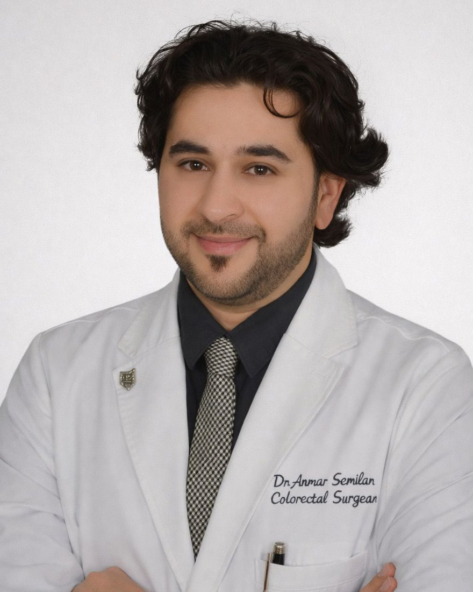
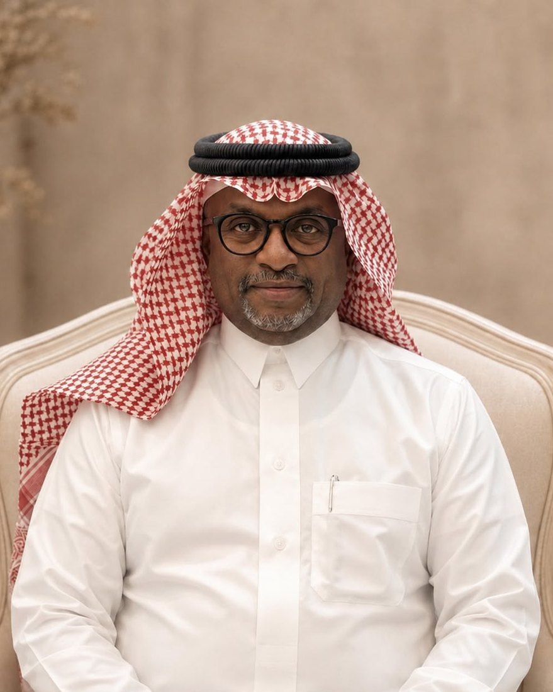

The society is guided by distinguished surgeons and healthcare leaders from across Saudi Arabia.

Consultant colorectal surgeon at the Cancer Center of Excellence, King Faisal Specialist Hospital & Research Centre, and Professor of Surgery at AlFaisal University. An international expert in colorectal cancer screening and prevention who has helped draft national, regional and WHO policy.
Founding memberHonorary Fellow, ASCRS (2026)Chair, WHO IARC Ethics Committee

